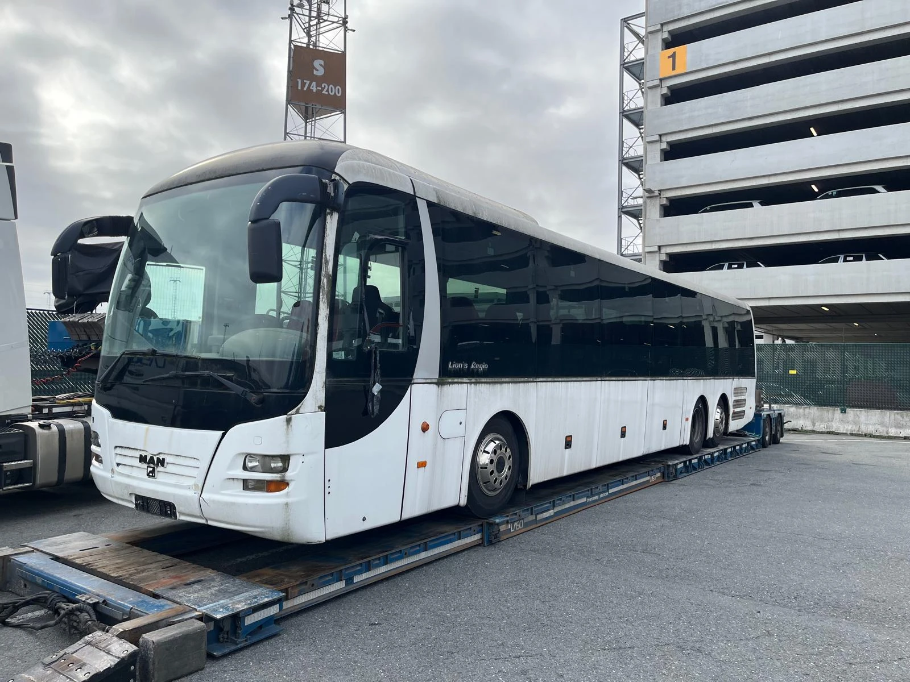

Der ‚ladende Tieflader‘ für Sondertransporte (transport exceptionnel)
Schon einmal von einem MAN Lion’s Regio Bus gehört? Nein? Das ist ein großer, hoher und langer Reisebus der Marke MAN mit 50 bis 60 Sitzplätzen, der oft im öffentlichen Nahverkehr eingesetzt wird.

Bustransport von Breda nach …
Ein Kunde kaufte ein solches Exemplar bei Abid Trading B.V. in Breda mit dem Ziel … ihn nach Tema, der wichtigsten Hafenstadt Ghanas, zu transportieren! Aber wie organisieren Sie den Transport eines Busses mit solch außergewöhnlichen Abmessungen?
Faster wurde sein Partner in dieser Geschichte.
Bei Faster klingelte das Telefon. Der Kunde am anderen Ende der Leitung bat darum, einen LKW-Transport für einen Bus von Breda nach Antwerpen zu organisieren. Er hatte einen Termin mit einem Schiffsmakler für die Verschiffung des Busses nach Tema, und deshalb musste der Bus zum Hafen von Antwerpen gebracht werden. Wir legten sofort los und organisierten gemeinsam mit unserem festen Partner den Transport. Und nicht irgendeinen Transport!
Sondertransport
Wie oben erwähnt, sind die Abmessungen des Busses nicht standardmäßig, und es wird ein ‚Low Loader‘ benötigt. Wir hören Sie denken: ein … was? Ein ‚Low Loader‘ ist das englische Wort für einen Tieflader. Die Ladehöhe des Aufliegers muss niedrig genug sein, damit der Bus darauf transportiert werden kann. Wir müssen nämlich berücksichtigen, dass die Brücken über die Autobahnen in der Regel 4 Meter hoch sind und wir also mit Auflieger und Bus darunter hindurchpassen müssen. Ab über 4 Meter und 4.3 Meter müssen Sie eine Genehmigung haben. Fachwissen, Kenntnisse und das richtige Material sorgten dafür, dass der Bus sicher im Antwerpener Hafen ankam. Bereit zur Verschiffung!
Ein kleines Extra
Hier endete unser Service nicht. Wir waren überzeugt, dass wir für unseren Kunden einen günstigeren Schiffsmakler finden konnten. Wir kontaktierten verschiedene Unternehmen, die Fahrzeuge verschifften, und sammelten konkurrierende Angebote. Unser Kunde gab klar zu verstehen, dass er lieber bei seinem vertrauten Schiffsmakler bleiben wollte, aber indem wir mit den erhaltenen Angeboten verhandelten, konnten wir den Preis bei seinem bestehenden Schifffahrtspartner doch senken. Zusätzlicher Service!